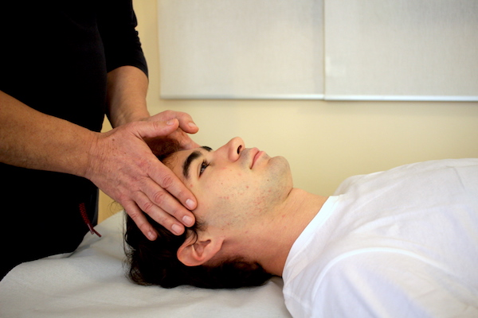

Linfodrenaggio Manuale Estetico Metodo Vodder
Effetti terapeutici
Il linfodrenaggio manuale estetico metodo vodder dona equilibrio idrico, riduce notevolmente il gonfiore dei tessuti facilitando l’eliminazione dei liquidi stagnanti e migliorando le funzionalità intestinali.
Patalogie trattate
Il linfodrenaggio manuale estetico metodo Vodder è un valido sostegno nel trattamento di cellulite, acne, smagliature, rughe, edemi superficiali e borse sotto gli occhi.
Cos'è e come funziona
Il linfodrenaggio manuale metodo Vodder è una speciale tecnica di massaggio che migliora il microcircolo linfatico superficiale accelerando il flusso linfatico-venoso. Grazie a questo tipo di stimolazione, si ottiene un deflusso dei liquidi attraverso le vie linfatiche e una progressiva riduzione dell’edema e quindi della ritenzione idrica.
Controindicazioni
Questa tecnica, seppure poco invasiva e dolce, è sconsigliata a persone che presentino malfunzionamenti renali o epatici, asma e bronchiti acute, flebiti, trombosi recenti, edemi cardiaci, infezioni cutanee, infiammazioni batteriche acute, ipotensione, ipertiroidismo.
Trattamento
Il metodo di massaggio è molto leggero e superficiale, una tecnica dolce cui può sottoporsi qualsiasi persona. La durata e la frequenza dei trattamenti possono variare. Per la cellulite e gli inestetismi della cute, sono consigliate almeno 30 sedute dai 50 ai 60 minuti.